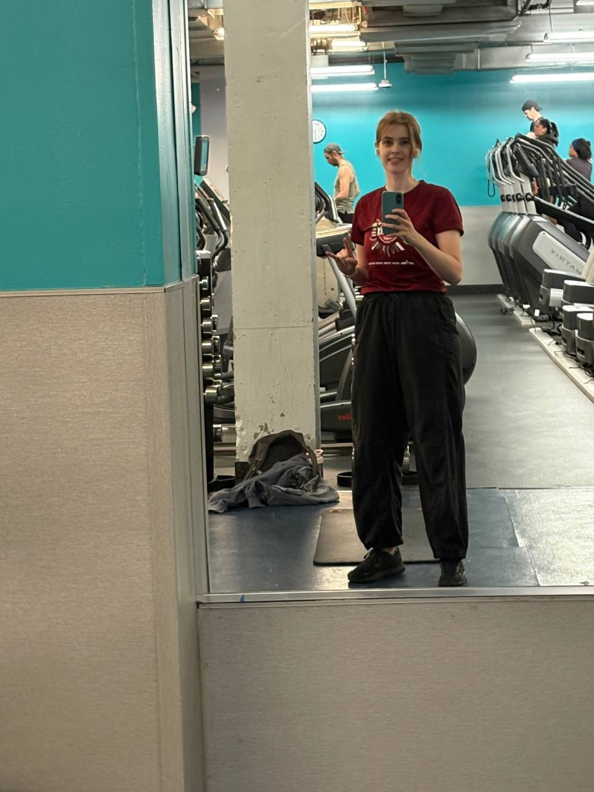
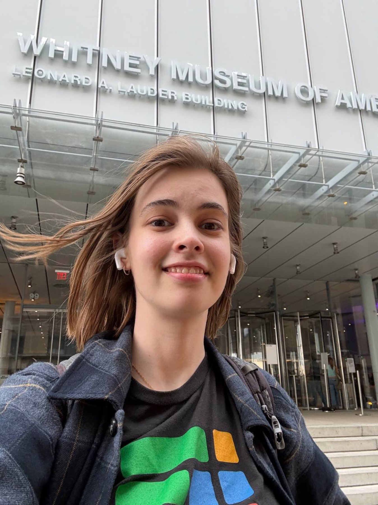
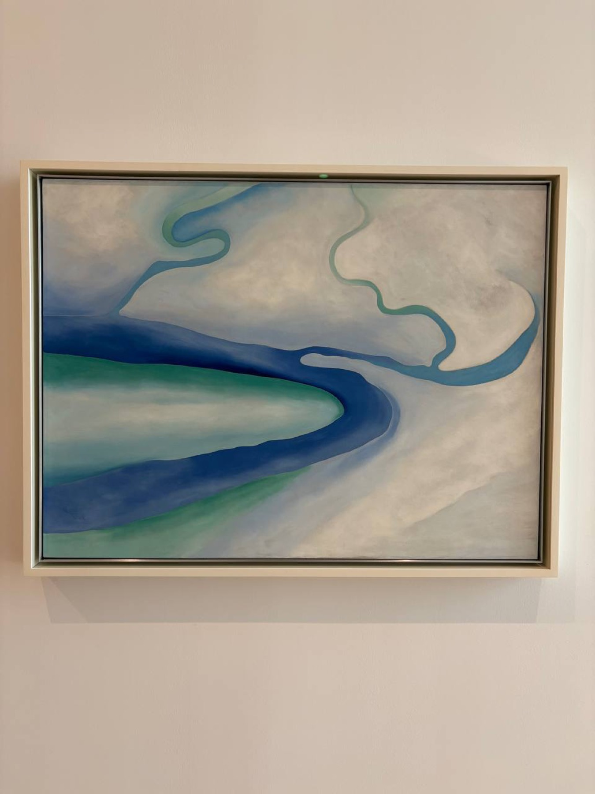
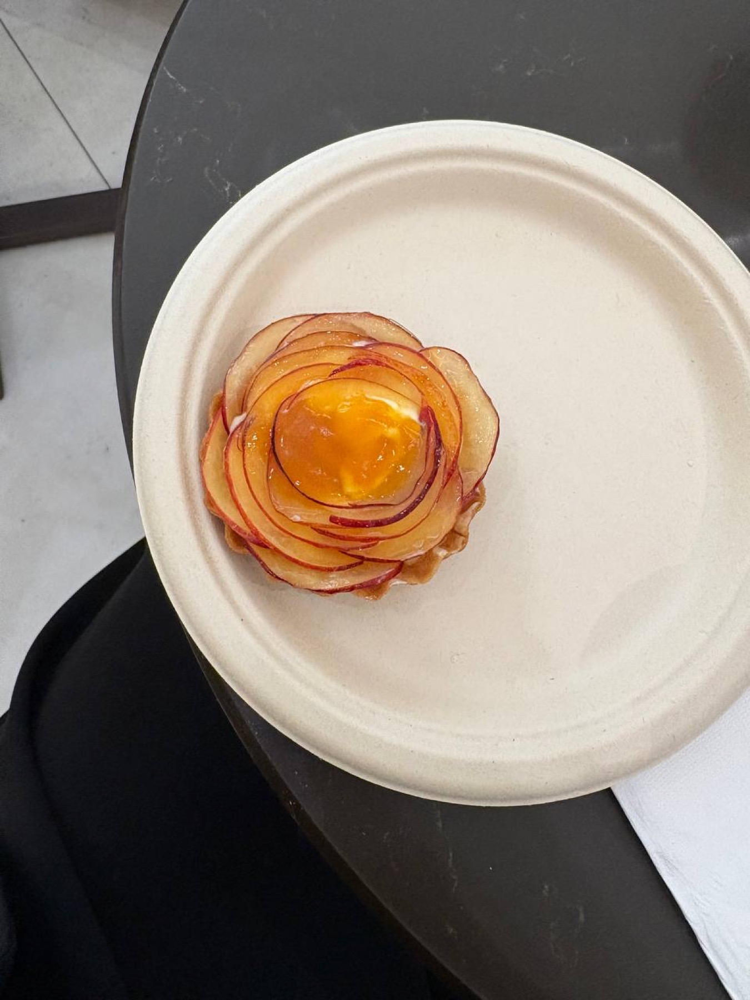
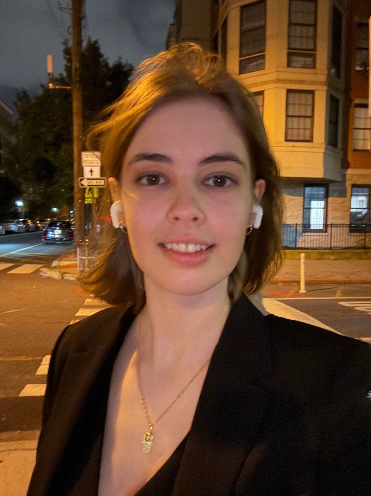
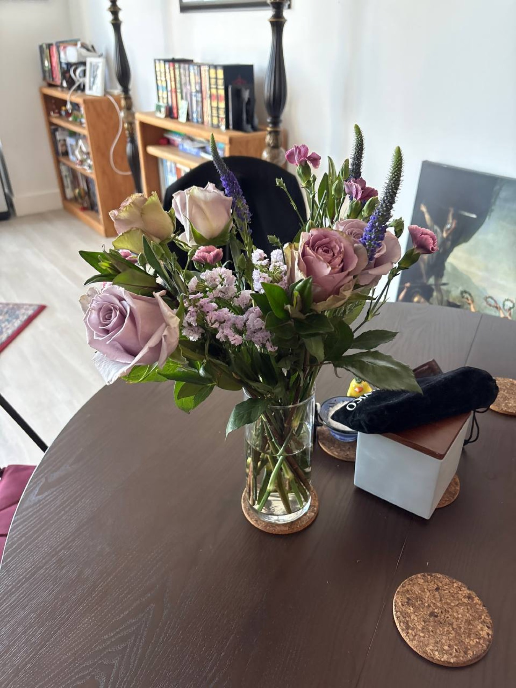
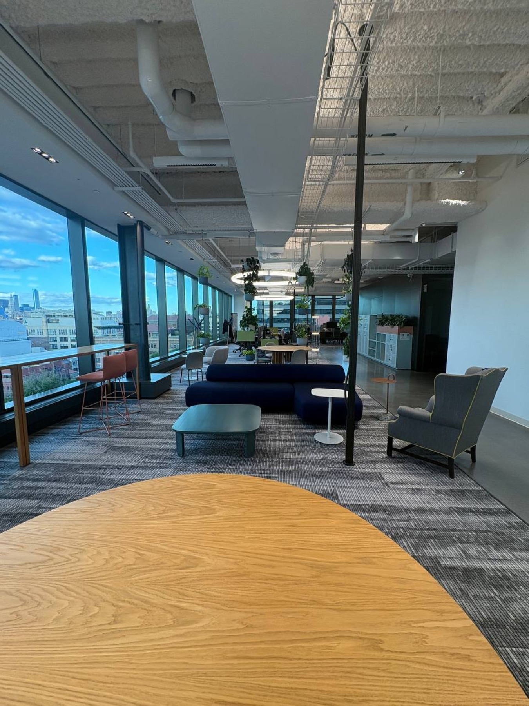
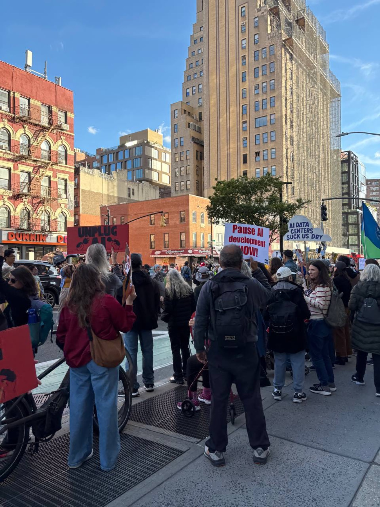
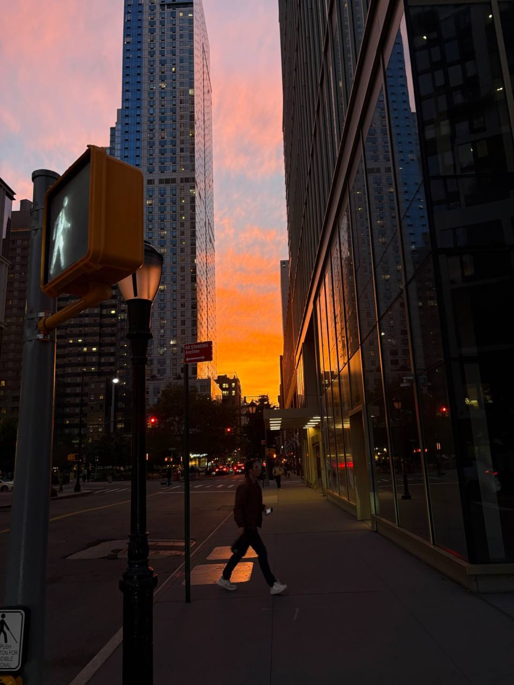

В прошлый четверг
Сходила в зал
В прошлый четверг я сходила в зал. Сфотографировалась в зеркале после тренировки, чтобы было доказательство: спорт действительно случился.

Нью-Йорк · сентябрь
Пишу вам маленькое письмо с фотографиями, чтобы показать, как у меня прошли последние дни. Тут и музей, и работа, и цветы, и планы на октябрь.

Сегодня
На работе у нас был бесплатный пропуск в музей Уитни, и я им воспользовалась. Музей стоит в очень красивом месте, рядом с водой, и там было приятно просто пройтись, посмотреть на картины и немного выдохнуть.

В прошлый четверг
В прошлый четверг я сходила в зал. Сфотографировалась в зеркале после тренировки, чтобы было доказательство: спорт действительно случился.

В прошлую субботу
В прошлую субботу я встретилась с Аней, и мы ели яблочное пирожное. Оно было очень вкусное и красивое, почти как розочка. А потом у Тины был день рождения: Гоша принес тархун, все посидели, поговорили, и день получился теплый и домашний.


Цветочки
Мне подарили очень красивые цветы просто так. Хотелось тоже показать вам эту маленькую приятную деталь.

В пятницу
В пятницу я была в офисе. Из окон там хороший вид, а рядом с работой был маленький протест против искусственного интеллекта. Очень тихий, не волнуйтесь.


Вечером
А еще рядом с домом был совершенно красивый закат. Я сфотографировала его, потому что мимо такого света пройти невозможно.

Планы на октябрь
В октябре будет много всего. Будет конференция, потом мы хотим поехать за яблоками с Тиной, Джоном и Эллиотом. Еще у меня будет командировка в Лондон, вместо Цюриха. А потом уже Хэллоуин, и надо будет придумать костюм.
Как у вас дела? Вы уже уехали с дачи или еще там? Как Буся? Очень вас люблю и жду новостей.